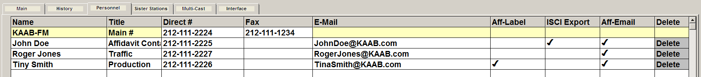

Personnel
The Personnel Tab is used to enter and store station personnel names, job titles, phone numbers and email addresses. The Aff-Label, ISCI Export, and Aff-Email columns are used to indicate the personnel that are included on the Mailing Labels, ISCI Export, and Log emails.

The first line in the grid shows the Call Letters, Phone Number and Fax number as they were entered on the Main tab. The personnel records are shown directly under that line.
Personnel records can either be entered manually on this screen, or imported from the Station Information import, or imported from the Counterpoint Affidavit system when a personnel record was added on the station website by a station user.
Starting with web version 3, these rules determine how station personnel work with the Affidavit website:
- When a user saves on the Stations screen, or opens the Stations screen, any personnel records that haven't been sent to the web yet but that should be sent to the Affidavit website due to having the “Aff-Email” checkbox checked and because they were added will be sent to the Affidavit website at that point.
- When sent to the website, they will get added to the website database with their account marked automatically verified. However, at this point, any station users added like this will not get an automated email notification that they’ve been added. In effect, they won't know they've been added as a user until they get a log alert email or they get an email notification generated from the Affiliate system.
- If a station personnel record gets added using the Station Information import (with "Aff-Email checked), the next time the Stations screen gets opened, or the web export gets run, they will be added to the web through this process.
- If a station user has already been sent to the website, and they get added to another station on the Affiliate system (either through the Station Information import or by being manually added on the Stations screen), they will appear under the other station on the website as well.
- When deleting a station personnel record from the Stations screen, it will get deleted from that station on the website. Note that the recommended best practice is to manage station personnel accounts from the Affidavit website once they've been added. See the "important note" below for more details.
- On the Affiliate system, if a user adds a station personnel record for an email address that is already in use as a network admin email account, it will not get added as a station personnel for that station on the web, as network admin accounts work differently from station personnel accounts.
Important note
While these rules allow station personnel to be added on the Affiliate system and allow those personnel records to get added to the Affidavit system website, by design, management of existing station personnel accounts should be managed on the Affidavit website, either by station users for their station, or by network admin accounts. For example, if an existing station personnel record email address needs to be changed, if the email address is changed only on the Affiliate system, the changed email address will not get fully propagated to the Affidavit website, and that station user will still have to log on to the station website using their old email address. Instead, in a case like this, or when the name or Job Title of a station user changes, that should be directly updated on the Affidavit website. When a station account needs to be deactivated, it should be deactivated on the station website directly. And when a station account needs the password reset, that can only be done on the Affidavit website. In other words, station personnel management should be performed on the Affidavit website, while station personnel accounts can be added either on the Affiliate system or on the Affidavit website.
For more information on managing Station Personnel on the Affidavit website, click here.
Adding a New Personnel Record Manually
To enter a new personnel record, click on the first blank name line and enter the name of the new personnel record. The minimum amount of information that must be entered for a new record is the name.
Adding a New Job Title
To enter a new job title:
- Click in the Title field, select New from the dropdown, and press Tab to bring up the Title List screen.
- Click in the Title field and enter the new job title.
- Press Save and then press Done. The new job title will be saved and entered for the new personnel record.
Job titles that are no longer in use can be erased from the system by selecting the job title on the Title List screen, then pressing the Delete button. If the job title is still in use, a warning message will appear and the job title will be prevented from being erased.
Note that starting with web version 3, as described above, management of Station Personnel for activities such as changing job titles should be performed on the Affidavit website.
Additional Fields
The phone number, fax number, and email fields are text fields. Type directly in these fields to enter the appropriate values.
Aff-Label, ISCI Export, and Aff-Email Fields
These fields are used as follows:
- Aff-Label: check this checkbox to include this person on the printed mailing labels report and on the Label Info export when the affidavit contact option is selected. Only one personnel record per station can be set to “Aff-Label”.
- ISCI Export: will include this person’s email address on certain ISCI exports.
- Aff-Email: the personnel records that have this checked will receive new log and revised log email alerts when they are sent.
The ISCI Export and Aff-Email checkboxes can only be checked when the personnel record has an email address defined.
Note: a single personnel record can have more than one field checked, for example, the “Aff-Label” contact can also have the “ISCI Export” and the “Aff-Email” checkbox checked, or any combination of the three.
Deleting Personnel
To delete a person from the Personnel screen:
- Click “Delete” in the far right column on the row of the person you wish to remove.
- A popup box will appear informing you that this action will permanently remove the person from the contact list.
- Answering Yes will remove the person.
- Answering No will return you to the Personnel screen.